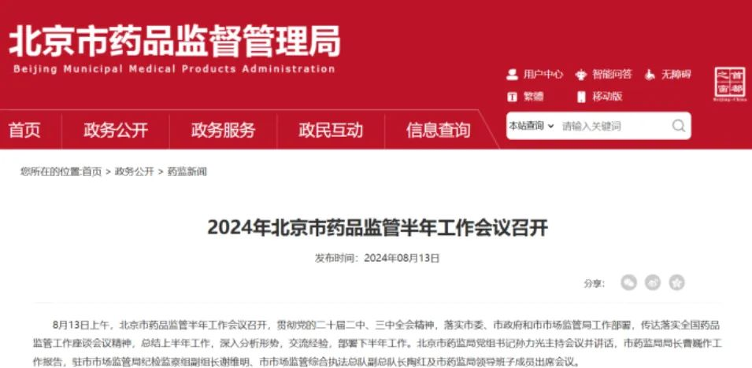
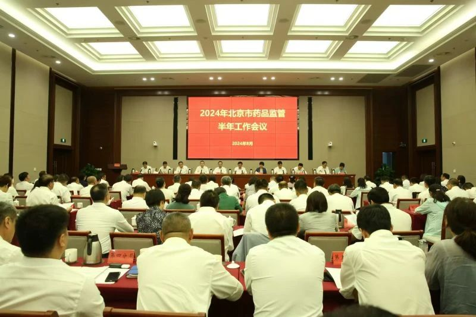
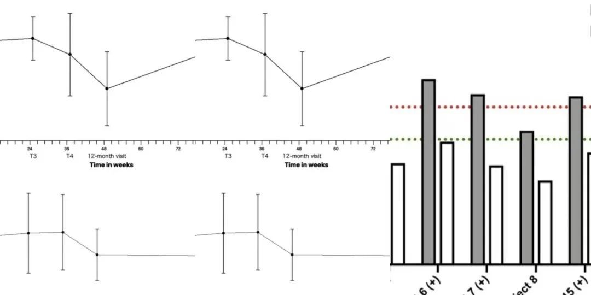

2024年8月，北京市药品监管半年工作会议召开，会上特别肯定了：核发全国第一张干细胞《药品生产许可证》的工作开展。

这张许可证的颁发，可以说是干细胞疗法上市的一块重要里程碑，也标志着干细胞治疗从实验室走向临床应用迈出了关键一步。

那么，这一进展究竟意味着什么？它对我国生物医药行业和患者又有什么重大影响呢？干细胞，被誉为 “生命的种子”，具有自我更新和分化成多种细胞类型的能力。作为生命的原始细胞，又被誉为“万能细胞”。
其在疾病治疗中的应用潜力巨大，从再生医学到组织修复，从肿瘤治疗到遗传性疾病的矫正，干细胞技术为医学界开辟了一条全新的路径。
随着现代医学技术的不断进步，干细胞疗法已经在多种疾病的治疗中显示出巨大的潜力。而全国首张干细胞《药品生产许可证》的核发，意味着我国干细胞疗法的生产标准和质量控制达到了一个新的高度。

但由于各种因素的影响，自2016年开始，干细胞药物的研发与生产面临着重重挑战，包括安全性、有效性、生产标准等诸多难题。
这张干细胞《药品生产许可证》的核发，无疑是该领域的一剂，可谓是“起死回生”的强心针。
一方面，这是对相关企业在技术、生产、管理等方面严格审查的结果；另一方面，更是国家层面对干细胞药物研发与生产规范化、标准化的肯定与支持。根据国家药品监督管理局的数据显示，目前我国在干细胞疗法的研究和临床应用上已经取得了不少成就。
据统计，截至2024年，全国范围内已经有超过7000项涉及干细胞的临床研究注册，覆盖了神经系统疾病、心血管疾病、自身免疫性疾病、代谢性疾病等多种领域。这些研究不仅表明了干细胞在治疗多种疑难杂症上的潜力，也展示了我国在这一前沿医学领域的科研实力。例如，在治疗糖尿病方面，华东地区的一项临床研究显示，通过干细胞移植治疗1型糖尿病的患者，有超过70%的人群在治疗后胰岛素需求量显著减少，部分患者甚至实现了胰岛素依赖的完全解除。此外，在脊髓损伤的治疗中，广州的一项研究显示，通过干细胞疗法，超过50%的患者在治疗后神经功能有所恢复，这在过去传统疗法中几乎是难以想象的。
1、心血管疾病：在北京大学第三医院进行的一项研究中，使用干细胞治疗急性心肌梗死的患者显示出明显的心功能改善。
研究中，接受干细胞治疗的患者与对照组相比，左心室射血分数平均提高了8.7%。这不仅为心梗患者提供了新的治疗希望，也展示了干细胞在心血管疾病中的广泛应用潜力。2、神经系统疾病：北京协和医院的一项研究表明，通过干细胞移植治疗帕金森病，患者的运动症状得到显著改善。研究结果显示，在接受治疗的30例患者中，超过60%的患者在治疗后UPDRS（统一帕金森病评分）评分减少了10分以上，显著提高了生活质量。3、自闭症：南京医科大学的一项临床试验显示，使用自体干细胞移植治疗儿童自闭症有一定疗效。2015年3月至2015年12月期间，选取20名自闭症6-16岁未接受过干细胞治疗。在接受治疗的20名自闭症患儿中，有70%的儿童表现出社交能力和语言能力的改善，父母们惊讶地发现，曾经沉默寡言的孩子们开始主动表达自己的情感。
01 创新与规范并重的体现
在干细胞药物研发的道路上，创新与规范如同鸟之双翼、车之两轮，缺一不可。首先，从创新角度来看，干细胞技术的突破为多种难治性疾病提供了新的治疗选择。这些创新成果的背后，是无数科研人员的辛勤付出和不懈探索。而《药品生产许可证》的核发，则为这些创新成果从实验室走向市场提供了坚实的保障。其次，从规范角度来看，干细胞药物的研发与生产需要严格遵守相关法律法规和质量标准。中国第一张干细胞《药品生产许可证》的核发，正是基于对这一点。它要求企业在研发、生产、质控等各个环节都达到国际先进水平，确保药品的安全性和有效性。这种规范化、标准化的生产模式，不仅有利于提升我国干细胞药物的国际竞争力，也为患者的用药安全提供了有力保障。
02 促进产业高质量发展的契机
中国第一张干细胞《药品生产许可证》的核发，不仅是对单一企业的认可，更是对整个干细胞产业高质量发展的有力推动。一方面，这一证书的核发将激发更多企业投身干细胞药物研发的热情和信心。随着政策的不断完善和市场需求的日益增长，越来越多的企业将加大在干细胞领域的投入力度，推动技术创新和产业升级。这将形成良性循环，促进整个产业的快速发展。另一方面，干细胞药物的商业化生产将带动相关产业链的完善和发展。从上游的原材料供应到中游的生产制造再到下游的销售服务，整个产业链将逐渐成熟和完善。这将为我国生物医药产业的高质量发展提供新的动力源泉。
全国首张干细胞《药品生产许可证》的核发，不仅是我国干细胞疗法发展的一个重要里程碑，更是向世界展示了中国生物医药创新的决心与实力。
在这条充满挑战与机遇的道路上，我们相信，通过政府、企业、科研机构及社会各界的共同努力，干细胞疗法将逐步走向成熟，为患者带来更多福音，共同筑就健康中国的美好未来。让我们携手并进，在生物医药的广阔天地中，启航新希望，共筑健康梦。